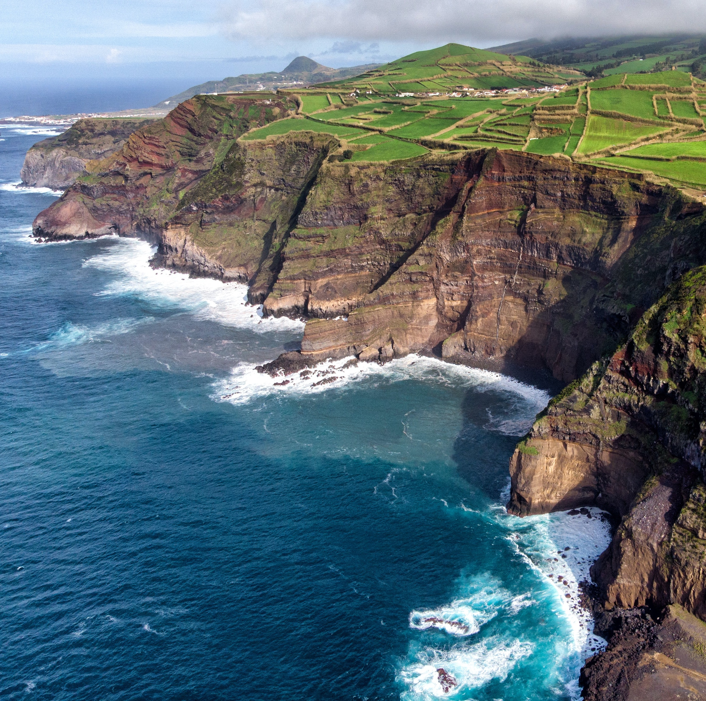
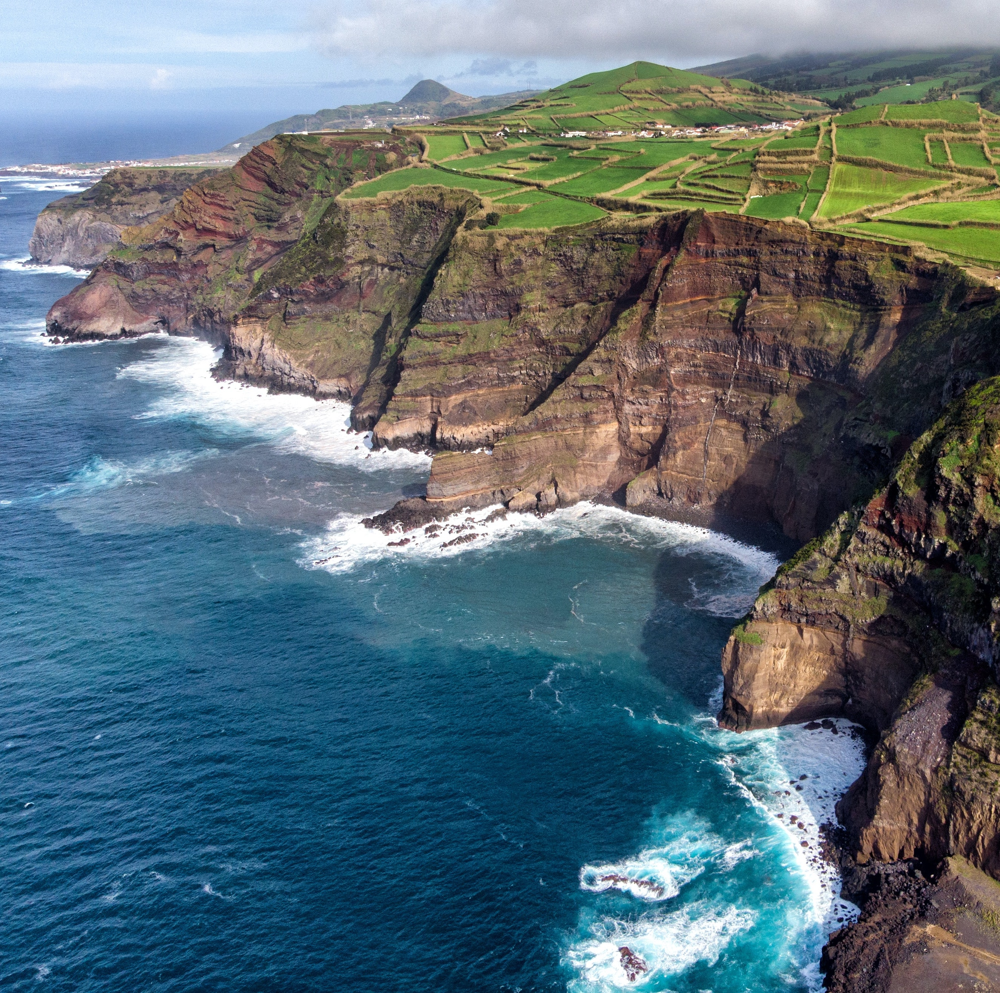

.travel.
Visit the Azores
an archipelago in the mid-atlantic

europe's hawaii
Azores - Idyllic Eden
We picked the Azores Islands as our next travel destination as we
enjoy good hotels with excellent food, great hiking areas and lots
of oppoertunities to explore another culture. The Azores are famous
for their year-round somewhat warm weather which is not too hot as
we usually escape the summer heat at home.
So for this week long journey, we have scheduled an itinerary for
three days, to have a little flexibility on the other days to see
what we feel like doing. Come along and see what's in store for our
vacation.
travel itinerary
Three Days on São Miguel
Hiking around the Lagoa da Furnas
- Option: Hiking up Pico do Ferro
- Length: 9.9 km / 13.3 km
- Duration: approx. 3 hrs / 4.5 hrs
This hike starts in Furnas and brings you in an easy hike around the lake. If you want it to be a little more challenging, include the hike up Pico do Ferro. The additional hike is pretty steep and can be muddy after rain, so be careful.
gallery
Impressions of São Miguel


 
